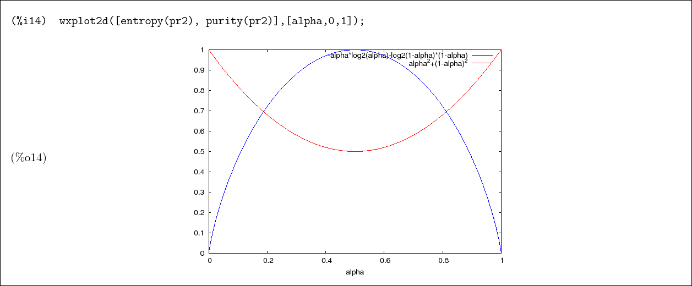

Now we are ready to introduce features that are more specific to the study quantum entanglement. Included here are measures of the degree of purity and measures of the degree of entanglement. For a review of quantum entanglement, see Ref.[1].
In this example we create three arbitrary  matrices, and check that
matrices, and check that
![\begin{boxedminipage}{2.0\linewidth}
\begin{verbatim}(%i1) m1 : matrix([a1,b1,...
...batim}
\begin{dmath}[number={\%o5}]
\mathbf{true}\end{dmath}\end{boxedminipage}](img148.png)
Here we trace over one component repeatedly and check that the result is
equal to the full trace. Note that, each time, we are tracing over the new
first component.

| (5) |
| (6) |  |
| (7) |  |

concurrence(rho) returns the concurrence of the state rho.
concurrence_vals(rho) returns a list of the square roots of
the eigenvalues in decreasing order, to the extent that Maxima
can determine the order.
When other methods are added, the organization and naming of the tests may change.
![\begin{boxedminipage}{2.0\linewidth}
\begin{verbatim}(%i2) pr : proj(schmidt_k...
...k[0]\sqrt{1-\alpha}^{\star}\*\sqrt{1-\alpha}\cr }
\end{dmath}\end{boxedminipage}](img170.png)
We see that Maxima is allowing that the quantities under the radicals may be negative. So
we set some rules, and try again.
![\begin{boxedminipage}{2.0\linewidth}
\begin{verbatim}(%i3) assume(alpha>0, 1-a...
...reak[0]0&\linebreak[0]0&\linebreak[0]1-\alpha\cr }\end{dmath}\end{boxedminipage}](img171.png)
The entropy
vanishes for a pure state, so that
 is
is
![\begin{boxedminipage}{2.0\linewidth}
\begin{verbatim}(%i6) entropy(pr);
\end{verbatim}
\begin{dmath}[number={\%o7}]
0\end{dmath}\end{boxedminipage}](img173.png)
The purity is equal to  if and only if
if and only if  is a pure state.
is a pure state.
![\begin{boxedminipage}{2.0\linewidth}
\begin{verbatim}(%i8) purity(pr);
\end{ve...
...%);
\end{verbatim}
\begin{dmath}[number={\%o9}]
1\end{dmath}\end{boxedminipage}](img174.png)
Now we compute the reduced density matrix of the second qubit by tracing over the first--

![\begin{boxedminipage}{2.0\linewidth}
\begin{verbatim}(%i10) pr2 : ptrace(pr,1)...
...pha&\linebreak[0]0\cr 0&\linebreak[0]1-\alpha\cr }\end{dmath}\end{boxedminipage}](img176.png)
Tracing over the second qubit instead gives the same result
![\begin{boxedminipage}{2.0\linewidth}
\begin{verbatim}(%i10) pr2 : ptrace(pr,1)...
...pha&\linebreak[0]0\cr 0&\linebreak[0]1-\alpha\cr }\end{dmath}\end{boxedminipage}](img177.png)
Computing
the entropy of a local state
shows that this state is, in general, mixed

Each eigenvalue  satisfies
satisfies
 , so that the sum of their squares is less than
one
, so that the sum of their squares is less than
one
![\begin{boxedminipage}{2.0\linewidth}
\begin{verbatim}(%i13) purity(pr2);
\end{...
...er={\%o13}]
\alpha^{2}+\left(1-\alpha\right)^{2}\end{dmath} \end{boxedminipage}](img180.png)
We
can plot the results (the plot function plot2d is more
common, depending on your user interface. wxplot2d has
the same calling syntax, but inlines the resulting plot.) We
see that the maximum entanglement occurs at  and
decreases monotonically from there in both directions, with
and
decreases monotonically from there in both directions, with
 giving pure joint states.
giving pure joint states.
